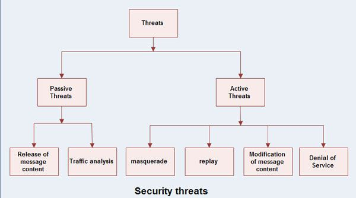

Network Security
Introduction
Computer Security means to protect information or Protecting information system from unintended access.
Network Security Threats
Network Security threats falls into two categories :

- Passive Threats : Passive threats, sometimes referred to as eavesdropping dropping, involve attempts by an attacker to obtain information relating to communication.
- Release of message contents
- A telephone conversation, an e-mail message and a transferred file may contain sensitive or confidential information.
- We would like to prevent the opponent from learning the content of these transmissions.
- Traffic analysis
- It is a kind of attack done on encrypted messages.
- The opponent might be able to observe the pattern of such encrypted message.
- The opponent could determine the location and identity of communicating hosts and could observe the frequency and length of messages being exchanged .
- Active Threats : Active threats involve some modification of the data stream or the creation of a false stream.
- Masquerade
- It takes place when one entity pretends to be a different entity.
- A masquerade attack usually includes one of the other forms of active attack.
- For e.g. authentication sequences can be captured and replayed after a valid authentication sequence has taken place, thus enabling an authorized entity with few privileges to obtain extra privileges by impersonating an entity that has those privileges.
- Replay
- It involves the passive capture of a data unit and its subsequent retransmission to produce an unauthorized effect.
- Modification of message contents
- It means that some position of a message is altered, or that messages are delayed or rendered, to produce an unauthorized effect.
- Denial of service
- A denial of service attack takes place when the availability to a resource is intentionally blocked or degraded by an attacker.
- In this way the normal use or management of communication facilities is inhibited.
- This attack may have a specific target. For e.g. an entity may suppress all messages directed to a particular destination.
- Another form of service denial is the disruption of an entire network, either by disabling the network or by overloading it with messages so as to degrade performance.
Network Services
Network Security can provide the following services related to a message and entity
- Message confidentiality
- Message Integrity
- Message Authentication
- Message non-reproduction
- Entity Authentication
Message confidentiality
It means that the content of a message when transmitted across a network must remain confidential, i.e. only the intended receiver and no one else should be able to read the message.
The users; therefore, want to encrypt the message they send so that an eavesdropper on the network will not be able to read the contents of the message.
Message Integrity
It means the data must reach the destination without any adulteration i.e. exactly as it was sent.
There must be no changes during transmission, neither accidentally nor maliciously.
Integrity of a message is ensured by attaching a checksum to the message.
The algorithm for generating the checksum ensures that an intruder cannot alter the checksum or the message.
Message Authentication
In message authentication the receiver needs to be .sure of the sender’s identity i.e. the receiver has to make sure that the actual sender is the same as claimed to be.
There are different methods to check the genuineness of the sender :
- The two parties share a common secret code word. A party is required to show the secret code word to the other for authentication.
- Authentication can be done by sending digital signature.
- A trusted third party verifies the authenticity. One such way is to use digital certificates issued by a recognized certification authority.
Message non-reproduction
Non-repudiation means that a sender must not be able to deny sending a message that it actually sent.
The burden of proof falls on the receiver.
Non-reproduction is not only in respect of the ownership of the message; the receiver must prove that the contents of the message are also the same as the sender sent.
Non-repudiation is achieved by authentication and integrity mechanisms.
Entity Authentication
In entity authentication (or user identification) the entity or user is verified prior to access to the system resources .
Cryptography
It is an art and science of transforming messages so as to make them secure and immune to attacks.Cryptography involves the process of encryption and decryption.
The terminology used in cryptography is given below:
- Plaintext : The original message or data that is fed into the algorithm as input is called plaintext.
- Encryption algorithm : The encryption algorithm is the algorithm that performs various substitutions and transformations on the plaintext. Encryption is the process of changing plaintext into cipher text.
- Ciphertext : Ciphertext is the encrypted form the message. It is the scrambled message produced as output. It depends upon the plaintext and the key.
- Decryption algorithm : The process of changing Ciphertext into plain text is known as decryption. Decryption algorithm is essentially the encryption algorithm run in reverse. It takes the Ciphertext and the key and produces the original plaintext.
- Key : It also acts as input to the encryption algorithm. The exact substitutions and transformations performed by the algorithm depend on the key. Thus a key is a number or a set of number that the algorithm uses to perform encryption and decryption.
There are two different approaches to attack an encryption scheme :
- Cryptanalysis
- Brute-force attack
Data Encryption Methods or Traditional Ciphers
The traditional ciphers are character-oriented and are organized into two categories :
- Substitution ciphers : Each letter or group of letters is replaced by another letter or group. They are of 2 types :
- Monoalphabetic
- Polyalphabetic
- Transposition ciphers : It does not subsitute a character with another character, rather it reorders the letters to change their locations.